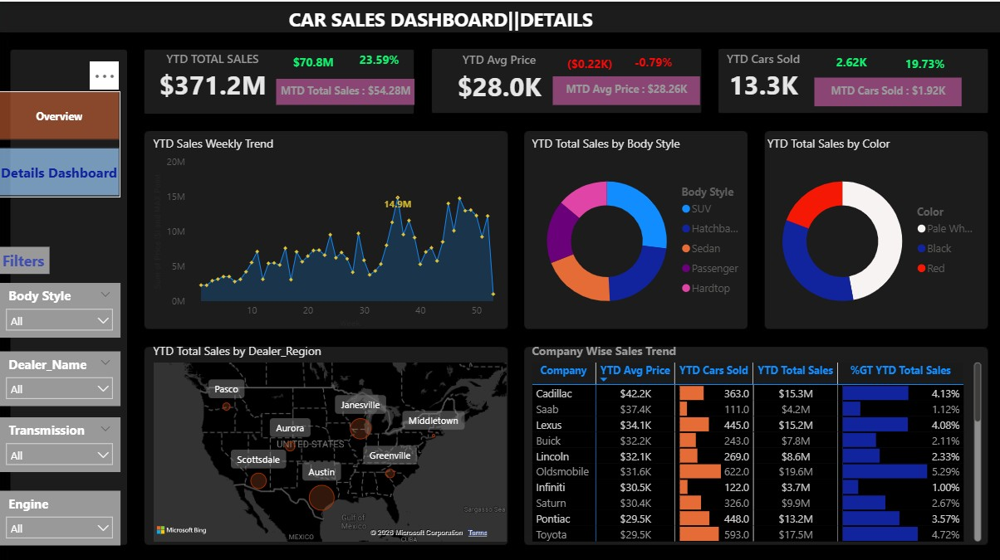
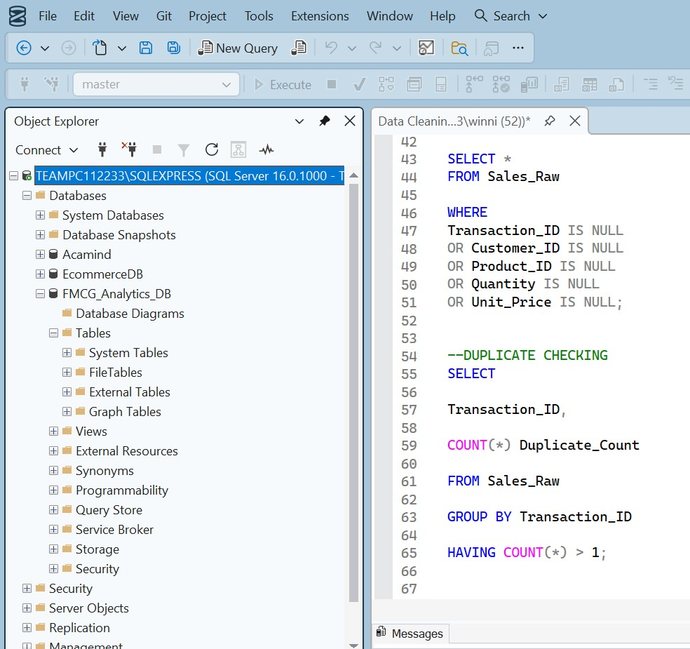

Car Sales Performance Project Using Power BI

The Car Sales Dashboard is an interactive Business Intelligence project recreated using Power BI as part of a hands-on learning exercise based on a Power BI tutorial. The project was completed to strengthen my practical skills in data modelling, DAX calculations, dashboard development, and data visualization. The dashboard transforms raw car sales data into an executive reporting solution that enables users to monitor sales performance, analyse key performance indicators (KPIs), evaluate dealer performance, and identify business trends through interactive visualizations. Working on this project enhanced my ability to build professional Power BI dashboards and communicate data-driven insights effectively.
Food Delivery Business Intelligence Analysis

This project demonstrates a complete Business Intelligence workflow, from raw data preparation to executive-level dashboard reporting. The objective was to analyze operational and business performance for a UAE food delivery company using transactional order data. Microsoft Excel was used for data extraction, cleaning, validation, and transformation, while Power BI was used for data modeling, KPI development, interactive dashboard creation, and business insights generation. The analysis evaluated revenue performance, customer activity, delivery efficiency, geographic demand, payment preferences, cuisine trends, and platform performance.
Data Cleaning
in SQL

In this project i trasformed raw data and cleaned it to make it usuable for analysis.

{kind=link}